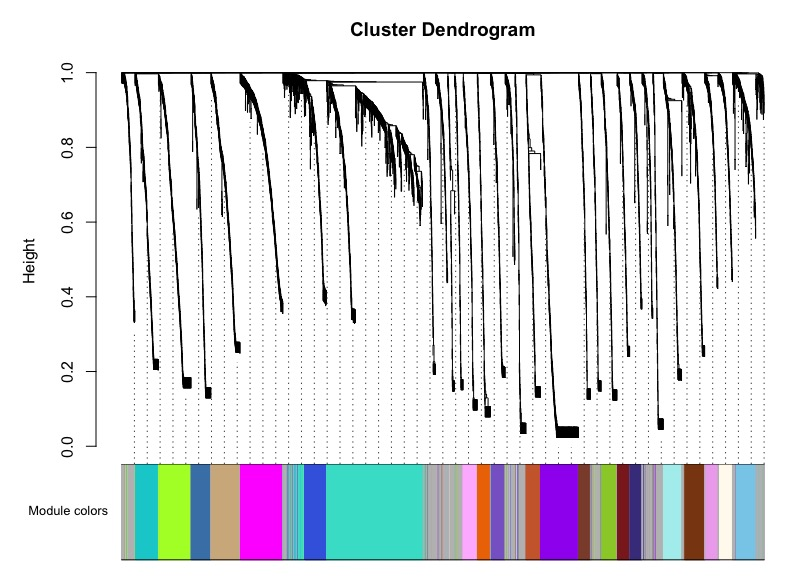
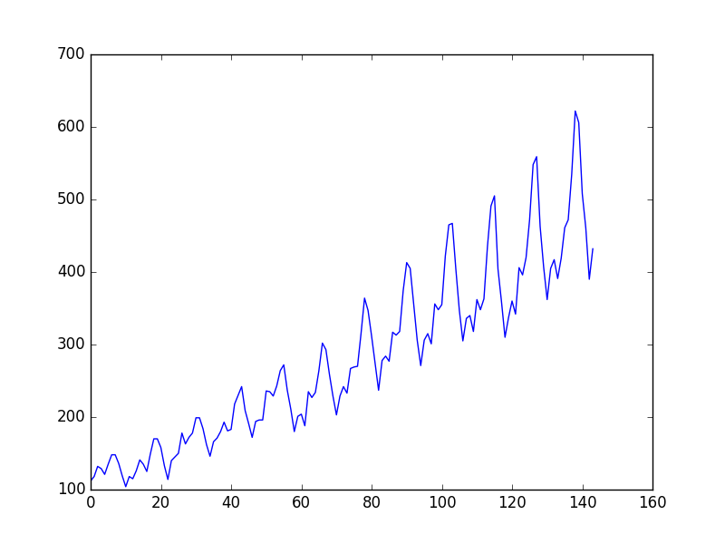
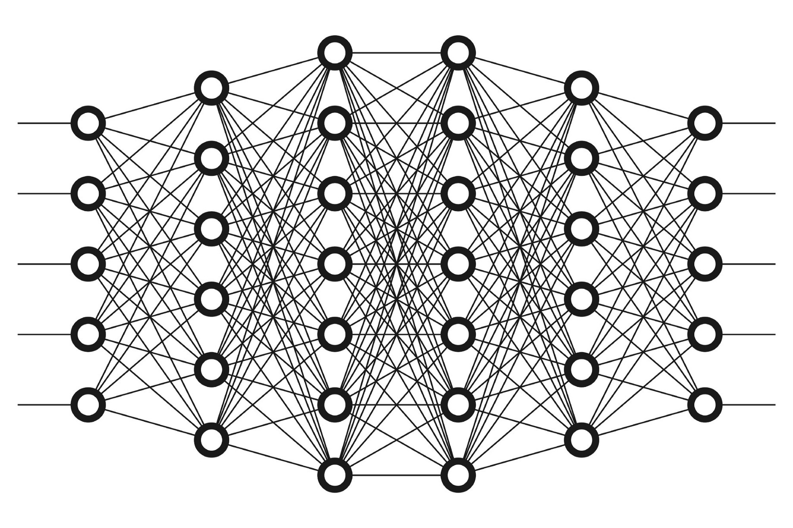

1. Construction of co-expression network of genes in M.oryzae

Magnaporthe oryzae is a model fungus to study plant-microbe interaction. By leveraging internal and external transcriptomic datasets, I am creating a bulked matrix to generate a WGCNA co-expression network for this specie. This would guide us to elucidate how the fungus governs its initial invasive growth, and further rapid colonisation.
2. Machine learning to predict proteins interaction
We know a lot about proteins, especially about how they interact with each other and peptide sequences. Rather than manual experiments, we are able to predict interaction by inputting training data and generate a optimised way to explore unknown interactions and structural features. I am currently working on it with scikit-learn with python, and I am aiming to determine codon usage bias for many diverse systems.

3.Prediction of virulence genes in plant pathogens using Convolutional Neural Networks

To effectively surveillance emerging threatens, we are delivering a method using TensorFlow to predict and classify pathogen genes using internal and external datasets. This facilitates us to be proactive when new isolates or lineages of pathogens come up, and react with solutions as soon as possible.